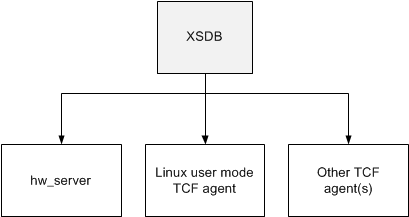

This section is intended to provide usage help for the Xilinx System Debugger CLI (XSDB).
XSDB is created to give a user-friendly, interactive, and scriptable command line interface to Xilinx hw_server and other incarnations of TCF servers used by Xilinx. You can take full advantage of the features supported by the TCF servers as XSDB interacts with the TCF servers. A major source of inspiration for the commands in XSDB comes from Xilinx Microprocessor Debugger (XMD). As with XMD, the XSDB scripting language is based on the Tools Command Language (Tcl).
Differences between XMD and XSDB are designed to do the following:
The figure below illustrates how XSDB can communicate with different types of TCF servers.
